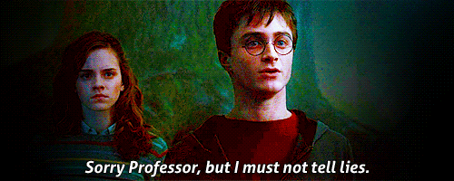

<!DOCTYPE html>
<html>
    <head>
        <meta charset="utf-8">
        <title>PotterScience</title>
        <meta name="description" content="PotterScience">
        <link rel="stylesheet" href="styles.css">
        <link rel="icon" href="star-white.jpg">
    </head>
    
</html>

<body>
    <div class="topnav">
        <a href="index.html"><br>Home</a>
        <a href="facts.html"><br>Facts</a>
        <a href="RantRoom.html"><br>RantRoom</a>
        <a class="active" href="Hogsmeade.html"></a>
      </div>

      <h1 class="gryff" style="font-size:45px;">The Chosen One</h1>
      <P class="pa" style="text-align: center;">Did you know his most sweetful sayings?</P>
      <p class="pb">Sweetful, as in heart-breaking too. The boy who lived, who survived the Killing Curse twice,
          the boy who felt so much loss and misery in such a young age. Who else is this boy than our beloved Harry Potter?
          Harry is known for his scar and the distinctive features of his round glasses and his messy brown hair.
          He is a part of the Golden Trio with Hermione Granger and Ron Weasley.
          Harry however, is part of the most underrated character in Harry Potter.
          Harry is full of positivity, and he was beyond a main character.
          He is a true Gryffindor and a true friend. The Harry Potter series tbh- was likely to make the fans suffer rather than being happy for a size of a child's book.
          Here, are some sweet lines of Harry that we would likely quote;
      </p>

      <div>
          <h4 class="gryff">
            1. "It's not... happy. Well, it is, it's the happiest I've ever felt. But it's complicated." 
          </h4>
          <iframe src="https://clip.cafe/e/392" style="width:800px;height:340px; padding-left: 20px; padding-right: 20px;"></iframe>
<br>
<p class="pc">"Not even his happiest memories were real." You are so correct, Potterheads. Harry's happiest memory was him imagining a conversation with his late parents.
    This line was one of the sweetest, but also the deepest claim that Harry Potter himself quoted.
    This saying was a talk between Harry and Professor Lupin when they were training Harry to use the Patronus Charm against the Dementors in The Prisoner of Azkaban.
    And mates, this memory of his works so well. A memory where I personally would cry for imagining.
</p><br><br>

<h4 class="gryff">
 2. "I'm sorry, Professor. But I must not tell lies." 
    </h4>

<br>
<p class="pc">
    There's just that villain you couldn't hate, and there's Umbridge. My, my, where do we even start to Umbridge-bash Dolores? LOL. Dolores Umbridge- an anti-dumbledore from the Minister of Magic.
    She was cunning enough to not be named a Professor. Oh, forget professors, she would never even fit the title of a teacher. Harry and Hermione tricked Umbridge for preventing her vicious actions and sent her right to a trap that leads to Hagrid's half-bro giant. And fortunately, a pack of Centaurs came along and attacked Umbridge.
    Umbridge then screamed for help, and what came next became one of Harry Potter's satisfying line.
</p><br><BR>


  

      <br>
      <br><br><BR><BR><BR><BR><BR><BR><BR><BR><BR><br>
      <footer class="footer">
        <p>Contact us; 
        <a href="mailto:jahypotenuse@gmail.com">jahypotenuse@gmail.com</a>&
        <a href="mailto:gillparker321@gmail.com">gillparker321@gmail.com</a></p>
      </footer> 
</body>